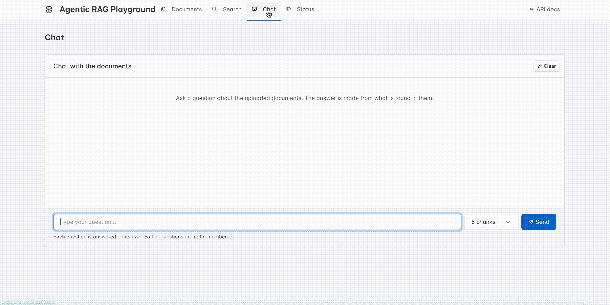

Loading...
Open source · MIT license


Try Agentic RAG on your own documents
Upload PDFs, then search inside them or chat with them. The LLM decides by itself what to search, and shows the sources with every answer.

What it does
A small but complete app, made for learning. Clone it, play with it, break it and improve it.
📄
Upload PDFs
Text is read page by page and cut into chunks. Each chunk keeps its page number.
🔎
Search by meaning
Embeddings and pgvector find the closest chunks, even when the words are different.
🤖
Agentic chat
The LLM has a search tool. It searches again with new words if the first results are weak.
🐳
One command
Docker Compose starts the app and Postgres, and runs the migrations for you.
How it works
Three flows, and each one is simple.
Upload
- The PDF is saved and pypdf reads the text
- Text is cut into chunks, page by page
- LiteLLM makes an embedding for each chunk
- Document and chunks are saved in Postgres
Search
- The query is converted to an embedding
- pgvector finds the nearest chunks
- Chunks come back with file, page and score
Chat
- The agent asks the LLM, with a search tool
- The LLM searches, again if needed
- It answers only from the found chunks
- The answer comes back with its sources
Architecture
The web UI, the API, the database and the LLM provider, in one picture.
Click the picture to open it full size. Read more in the architecture doc below.
Quick start
Docker and an OpenAI API key are all that is needed.
git clone https://github.com/stackblogger/agentic-rag-playground.git
cd agentic-rag-playground
cp .env.example .env # set OPENAI_API_KEY in it
docker compose up -d --buildThen open http://127.0.0.1:8000 for the web UI.
Built with
Python 3.11
FastAPI
PostgreSQL + pgvector
SQLAlchemy
Alembic
LiteLLM
pypdf
Docker Compose
Tabler UI
pytest
Docs
The same docs that are in the repo, shown here.